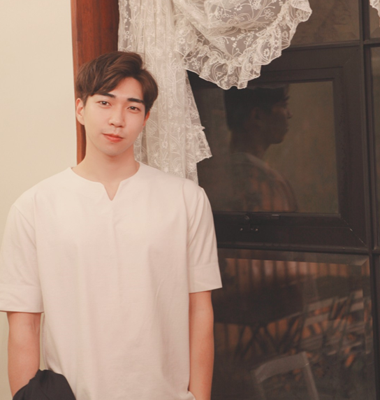
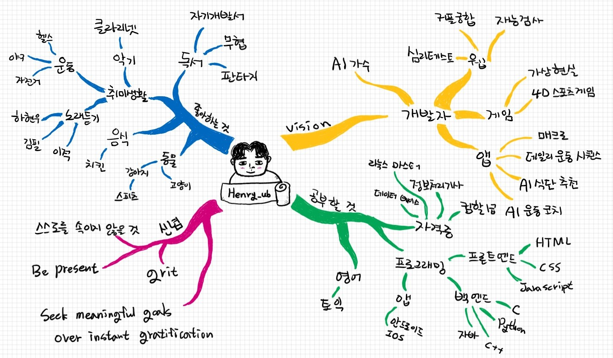

단순히 책을 읽고 지나가는 독자의 삶에서, 자신과 환경과 주변사람들의 변화를 이끄는 주인공의 삶으로 장르가 바뀌는 순간.
instagram: Henry_ub
About Me
안녕하세요!!
'코딩인간(코딩으로 인간세계를 널리 이롭게 하자!)'이라는 비전을 품은,
심화컴퓨터공학 1학년 우성현이라고 합니다.
저는 2014년도에 입학을 했다가 하고 싶은 일이 있어 그 일을 하다가 올해 다시 재입학을 하게 되었습니다.
제가 당시 하고 싶었던 일은 헬스트레이너입니다. 그래서 그때부터 헬스트레이너를 4년간 하며,
PT도 하고 관련된 여러 자격증도 취득했습니다. 올해 2월에는 홈트레이닝 인강을 촬영하기도 했습니다.
헬스트레이너를 하며 떠오르는 여러가지 아이디어 있었습니다.
주로 헬스케어와 IT가 융합된 아이디어인데, 저는 이 아이디어를 실현하고 사업화하기 위해서
27살이라는, 다소 늦은 나이지만 재입학을 하게 되었습니다.
사실 개발이라는 분야가 적성을 많이 탄다고 해서 걱정을 많이 했었는데
걱정과는 달리 너무 재미있었고 점점 그 맛을 알아가는 중입니다ㅎㅎㅎ
헬스트레이너의 실무 경험이라는 장점을 잘 살려
헬스 케어 분야에 큰 획을 긋는 개발자가 되도록 노력하겠습니다!!
Mind Map
